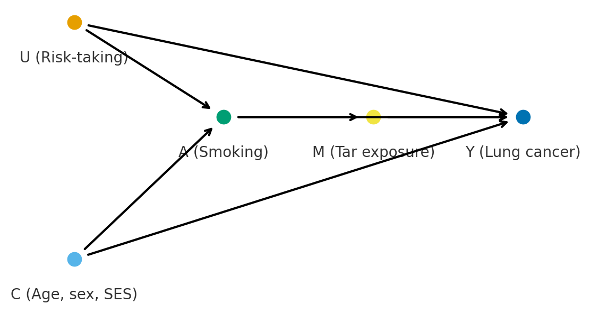

# ============================================================
# FB2NEP bootstrap cell (works both locally and in Colab)
#
# What this cell does:
# - Ensures that we are inside the fb2nep-epi repository.
# - In Colab: clones the repository from GitHub if necessary.
# - Loads and runs scripts/bootstrap.py.
# - Makes the main dataset available as the variable `df`.
#
# Important:
# - You may see messages printed below (for example from pip
# or from the bootstrap script). This is expected.
# - You may also see WARNINGS (often in yellow). In most cases
# these are harmless and can be ignored for this module.
# - The main thing to watch for is a red error traceback
# (for example FileNotFoundError, ModuleNotFoundError).
# If that happens, please re-run this cell first. If the
# error persists, ask for help.
# ============================================================
import os
import sys
import pathlib
import subprocess
import importlib.util
# ------------------------------------------------------------
# Configuration: repository location and URL
# ------------------------------------------------------------
# REPO_URL: address of the GitHub repository.
# REPO_DIR: folder name that will be created when cloning.
REPO_URL = "https://github.com/ggkuhnle/fb2nep-epi.git"
REPO_DIR = "fb2nep-epi"
# ------------------------------------------------------------
# 1. Ensure we are inside the fb2nep-epi repository
# ------------------------------------------------------------
# In local Jupyter, you may already be inside the repository,
# for example in fb2nep-epi/notebooks.
#
# In Colab, the default working directory is /content, so
# we need to clone the repository into /content/fb2nep-epi
# and then change into that folder.
cwd = pathlib.Path.cwd()
# Case A: we are already in the repository (scripts/bootstrap.py exists here)
if (cwd / "scripts" / "bootstrap.py").is_file():
repo_root = cwd
# Case B: we are outside the repository (for example in Colab)
else:
repo_root = cwd / REPO_DIR
# Clone the repository if it is not present yet
if not repo_root.is_dir():
print(f"Cloning repository from {REPO_URL} into {repo_root} ...")
subprocess.run(["git", "clone", REPO_URL, str(repo_root)], check=True)
else:
print(f"Using existing repository at {repo_root}")
# Change the working directory to the repository root
os.chdir(repo_root)
repo_root = pathlib.Path.cwd()
print(f"Repository root set to: {repo_root}")
# ------------------------------------------------------------
# 2. Load scripts/bootstrap.py as a module and call init()
# ------------------------------------------------------------
# The shared bootstrap script contains all logic to:
# - Ensure that required Python packages are installed.
# - Ensure that the synthetic dataset exists (and generate it
# if needed).
# - Load the dataset into a pandas DataFrame.
#
# We load the script as a normal Python module (fb2nep_bootstrap)
# and then call its init() function.
bootstrap_path = repo_root / "scripts" / "bootstrap.py"
if not bootstrap_path.is_file():
raise FileNotFoundError(
f"Could not find {bootstrap_path}. "
"Please check that the fb2nep-epi repository structure is intact."
)
# Create a module specification from the file
spec = importlib.util.spec_from_file_location("fb2nep_bootstrap", bootstrap_path)
bootstrap = importlib.util.module_from_spec(spec)
sys.modules["fb2nep_bootstrap"] = bootstrap
# Execute the bootstrap script in the context of this module
spec.loader.exec_module(bootstrap)
# The init() function is defined in scripts/bootstrap.py.
# It returns:
# - df : the main synthetic cohort as a pandas DataFrame.
# - CTX : a small context object with paths, flags and settings.
df, CTX = bootstrap.init()
# Optionally expose a few additional useful variables from the
# bootstrap module (if they exist). These are not essential for
# most analyses, but can be helpful for advanced use.
for name in ["CSV_REL", "REPO_NAME", "REPO_URL", "IN_COLAB"]:
if hasattr(bootstrap, name):
globals()[name] = getattr(bootstrap, name)
print("Bootstrap completed successfully.")
print("The main dataset is available as the variable `df`.")
print("The context object is available as `CTX`.")1.09 – Confounding, DAGs, and Causal Structure
Version 0.0.6
This workbook builds on Workbook 6.
In Workbook 6, we treated regression as a practical tool for estimating associations between an exposure and an outcome, and we focused on model types (linear, logistic, Cox), assumptions, diagnostics, and basic interpretation of coefficients (β, OR, RR, HR).
In this workbook, we move from association to causal thinking. We introduce:
- Confounders.
- Colliders.
- Mediators.
- Directed acyclic graphs (DAGs) as a way to formalise causal assumptions.
- Approaches to adjustment (stratification and regression).
- The special role of energy intake in nutritional epidemiology.
- A brief introduction to counterfactual thinking.
A more formal treatment of causal inference, including modern notation and methods, is given in Workbook 9. Here we focus on intuition and on how causal structure affects regression analyses in practice.
We will use the synthetic FB2NEP cohort throughout. The precise variable names may differ slightly from those used here; if you obtain an error (for example, KeyError), carefully check the column names of the dataset and adapt the code accordingly.
"""
Imports and quick inspection
============================
In this cell we:
- Import common packages used in this workbook.
- Display basic information about the dataset to confirm that it is loaded.
The imports are deliberately explicit. Many students using this workbook
will not yet have much experience with Python, so we avoid implicit
magic and keep the code readable.
"""
import numpy as np
import pandas as pd
import matplotlib.pyplot as plt
import statsmodels.api as sm
import statsmodels.formula.api as smf
from IPython.display import display
from scipy.stats import norm
from scripts.helpers_tables import or_from_linear_combination
print("DataFrame shape (rows, columns):", df.shape)
print("\nFirst five rows of the dataset:")
display(df.head())
print("\nVariable types (first 20 columns):")
display(df.dtypes.head(20))0.1 1. Association and causation
Regression models (linear, logistic, Cox) quantify associations:
- In linear regression, a coefficient describes how the mean outcome changes with the exposure.
- In logistic regression, we obtain odds ratios.
- In Cox regression, we obtain hazard ratios.
However, public health decisions concern causal effects:
If we changed this exposure (for example, salt intake), what would happen to the outcome?
In observational data, a non-zero regression coefficient does not automatically imply a causal effect. Several types of variables can distort or create associations:
- Confounders: common causes of exposure and outcome that, if unadjusted, bias estimated effects.
- Colliders: variables that are caused by two other variables; conditioning on them can create spurious associations.
- Mediators: variables lying on the causal pathway; adjusting for them can remove part of a genuine effect.
To move from association to causation we need to consider the causal structure of the variables. In this workbook we introduce DAGs and basic adjustment strategies. Workbook 9 provides a more formal framework for causal inference.
0.2 2. DAGs for model development and identification of confounders, colliders, and mediators
A directed acyclic graph (DAG) is a diagram with arrows that represents assumptions about which variables cause which. It is:
- Directed: arrows have a direction (cause → effect).
- Acyclic: there are no feedback loops.
DAGs are useful because they make assumptions explicit and allow us to reason about which variables we should adjust for in regression models.
0.2.1 2.1 Constructing a DAG
To construct a DAG for a research question:
- List key variables
- Exposure (for example, red meat intake).
- Outcome (for example, incident cancer).
- Plausible causes of exposure and outcome (for example, socio-economic status, age, smoking).
- Draw arrows according to subject-matter knowledge
- If variable A can plausibly influence variable B, draw
A → B. - Do not add arrows simply because two variables are correlated in the data.
- If variable A can plausibly influence variable B, draw
- Identify paths between exposure and outcome
- Causal paths (exposure → … → outcome).
- Non-causal “backdoor” paths (exposure ← … → outcome) that create confounding.
- Decide on an adjustment set
- Choose variables to adjust for so that all non-causal backdoor paths are blocked, without conditioning on colliders or mediators.

0.2.2 2.2 Why we do not include everything
It might be tempting to adjust for every available variable. This is usually a bad idea because:
- Adjusting for colliders can create bias.
- Adjusting for mediators can remove part of the effect we are interested in (for example, when estimating the total effect of an exposure).
- Adjusting for variables that are neither confounders nor mediators can increase variance and complicate interpretation without reducing bias.
A good DAG includes enough variables to capture the main causal structure, but not every variable in the dataset. We use subject-matter knowledge and parsimony: include variables that are plausible causes of exposure and outcome, and that are important for the research question.
0.3 3. Confounders
0.3.1 3.1 Definition and informal examples
A variable is a confounder for the association between an exposure and an outcome if:
- It is associated with the exposure.
- It is a cause of, or associated with a cause of, the outcome.
- It is not on the causal pathway from exposure to outcome.
Intuitively, a confounder is a variable that makes exposed and unexposed individuals systematically different, in a way that also affects the outcome.
Classic informal examples include:
Number of children and BRCA risk: women with more children tend to be older, and age affects the probability of having developed breast cancer; age can confound the association between “number of children” and “current breast cancer status”.
Hair length and income: there may appear to be an association between hair length and income if, in a given setting, women tend to have longer hair than men and also have different average incomes; sex is a confounder.
0.3.2 Hippo example (confounding)
Hippo size and daily grass intake
Suppose we observe that larger hippos eat more grass per day.
We might be tempted to conclude that being large makes hippos eat more.
But consider the underlying biology:
- Older hippos tend to be larger (simply through growth).
- Older hippos also spend more hours grazing because they no longer play in the water as much as juveniles.
Age is therefore a confounder:
age
/ \
hippo size grass intakeIn causal terms:
Size ← Age → Grass intake
If we ignore age, the association between hippo size and grass intake partly reflects the fact that older hippos both weigh more and eat more, not necessarily that body size itself increases grazing behaviour.
0.3.3 3.2 Approaches to adjustment
There are two basic ways to adjust for confounders:
- Stratification
- Analyse the exposure–outcome association within levels of the confounder.
- For example, estimate the association separately in high and low socio-economic status (SES) groups.
- Inclusion in a regression model
- Include the confounder as a covariate (predictor) in the regression model.
- For a linear model: \[ Y = \beta_0 + \beta_1 X + \beta_2 C + \varepsilon, \] where $ X $ is the exposure and $ C $ is the confounder.
- The coefficient $ _1 $ is then interpreted as the association between $ X $ and $ Y $ for individuals with the same value of $ C $.
In practice, regression models with appropriate covariates are the most common approach, but stratified analyses are useful for checking assumptions and for illustrating confounding.
In the next section we use the FB2NEP cohort to demonstrate confounding in a setting where the data-generating mechanism includes known confounders.
0.4 3.3 Example: physical activity, SES, and incident CVD
We now consider a concrete example using the FB2NEP cohort.
- Exposure: physical activity (
physical_activity). - Outcome: incident cardiovascular disease during follow-up (
CVD_incident). - Potential confounder: socio-economic status (
SES_class).
From the data generator we know that:
- Physical activity (
physical_activity) is socially patterned: higher SES and less deprivation are associated with higher activity. - CVD risk is affected by several factors related to SES (for example, smoking, SBP, BMI, diet).
A simplified DAG is:
SES_class → physical_activity
SES_class → CVD_incident
physical_activity → CVD_incident (modest protective effect)Here, SES_class is a confounder: it influences both physical activity and CVD. If we estimate the association between physical activity and CVD without adjusting for SES, the result may be biased. We therefore:
- Create a binary indicator of “high” physical activity.
- Fit a crude logistic regression model of CVD on high activity.
- Fit an SES-adjusted model.
- Compare the results and repeat the analysis stratified by SES.
from scripts.helpers_tables import summarise_logit_coef
OUTCOME_VAR = "CVD_incident"
EXPOSURE_RAW = "physical_activity" # categorical: low / moderate / high
CONF_VAR = "SES_class" # ABC1 / C2DE
# ---------------------------------------------------------------------
# 1. Check variables and prepare analysis dataset
# ---------------------------------------------------------------------
for v in [OUTCOME_VAR, EXPOSURE_RAW, CONF_VAR]:
if v not in df.columns:
raise KeyError(
f"Variable '{v}' not found in df. "
f"Available columns (first 20): {list(df.columns)[:20]}"
)
# We define high physical activity as the exposure of interest
df_pa = df[[OUTCOME_VAR, EXPOSURE_RAW, CONF_VAR]].dropna().copy()
df_pa["highPA"] = (df_pa[EXPOSURE_RAW] == "high").astype(int)
print(f"Complete-case sample size: {df_pa.shape[0]} observations\n")
print("Distribution of physical_activity and SES_class:\n")
display(pd.crosstab(df_pa[EXPOSURE_RAW], df_pa[CONF_VAR], normalize="columns"))
# ---------------------------------------------------------------------
# 2. Crude and SES-adjusted logistic regression models
# ---------------------------------------------------------------------
formula_crude = f"{OUTCOME_VAR} ~ highPA"
formula_adj = f"{OUTCOME_VAR} ~ highPA + C({CONF_VAR})"
m_crude = smf.logit(formula_crude, data=df_pa).fit(disp=False)
m_adj = smf.logit(formula_adj, data=df_pa).fit(disp=False)
rows = []
rows.append(
summarise_logit_coef(
m_crude,
var_name="highPA",
label="Crude model (no SES adjustment)"
)
)
rows.append(
summarise_logit_coef(
m_adj,
var_name="highPA",
label="Adjusted model (including SES_class)"
)
)
summary_pa = pd.DataFrame(rows)
print("\nHigh physical activity vs incident CVD: crude and SES-adjusted models\n")
display(summary_pa.round(3))0.4.1 Interpreting crude vs SES-adjusted models (physical activity)
The table summarises the association between high physical activity (highPA) and incident CVD:
- The crude model compares high vs non-high physical activity without adjustment for SES.
- The adjusted model includes
SES_classas a covariate.
Typical patterns to look for:
- If high physical activity is genuinely protective, you might expect an OR < 1.
- Because SES is associated with both physical activity and CVD, failing to adjust for SES can bias the crude OR towards or away from 1.
In this synthetic cohort you will usually find that:
- The crude OR for
highPAis only modestly below 1 (weak protective effect). - The SES-adjusted OR is somewhat further from 1 (stronger apparent protection).
This is consistent with positive confounding: high SES participants tend to be more physically active and at lower CVD risk for other reasons. When SES is left unadjusted, part of this benefit is incorrectly attributed to physical activity. Once SES is included in the model, the association for highPA more closely reflects the effect of physical activity for individuals with the same SES.
0.4.2 3.4 Stratification by SES
Regression adjustment is one way to account for confounding. Another is to analyse the exposure–outcome association within strata of the confounder.
Here we:
- Split the data into two strata:
SES_class = ABC1andSES_class = C2DE. - In each stratum, fit a logistic regression model: CVD_incident ~ highPA
- Compare the stratum-specific odds ratios.
If SES is a confounder rather than an effect modifier, we would expect the stratum-specific ORs for highPA to be more similar to each other and to the SES-adjusted OR, and different from the crude OR.
"""Stratified analysis: highPA and CVD_incident within SES strata."""
rows_strata = []
print("Stratified analyses by SES_class (separate models in each stratum):\n")
for level in sorted(df_pa[CONF_VAR].unique()):
df_stratum = df_pa[df_pa[CONF_VAR] == level]
print(f" Stratum {level}: n = {df_stratum.shape[0]}")
# Need variation in exposure and outcome
if df_stratum[OUTCOME_VAR].nunique() < 2 or df_stratum["highPA"].nunique() < 2:
print(" Not enough variation in outcome or exposure for logistic regression.\n")
continue
m_stratum = smf.logit(f"{OUTCOME_VAR} ~ highPA", data=df_stratum).fit(disp=False)
rows_strata.append(
summarise_logit_coef(
m_stratum,
var_name="highPA",
label=f"SES_class = {level}"
)
)
if rows_strata:
summary_strata_pa = pd.DataFrame(rows_strata)
print("\nStratum-specific odds ratios for highPA (by SES_class):\n")
display(summary_strata_pa.round(3))0.4.3 Interpreting the SES-stratified highPA–CVD associations
The table above shows the association between high physical activity (highPA) and incident CVD within strata of socio-economic status (SES_class):
- ABC1
- OR ≈ 1.05 (95 % CI 0.91 to 1.20), p ≈ 0.52
- Point estimate slightly above 1.0, but the confidence interval is wide and clearly includes 1.0 → compatible with no association.
- OR ≈ 1.05 (95 % CI 0.91 to 1.20), p ≈ 0.52
- C2DE
- OR ≈ 0.89 (95 % CI 0.76 to 1.03), p ≈ 0.11
- Point estimate slightly below 1.0, again with a confidence interval that includes 1.0 → also compatible with no association.
- OR ≈ 0.89 (95 % CI 0.76 to 1.03), p ≈ 0.11
A few points to emphasise:
The effect sizes are small in both strata, and statistically weak.
There is no strong evidence that high physical activity is clearly protective or clearly harmful for CVD in either SES group in this synthetic cohort.The directions differ slightly (OR > 1 in ABC1, OR < 1 in C2DE), but the confidence intervals are wide and largely overlapping. This means that the apparent difference between strata is easily explained by random variation.
As a worked example, this is closer to “what often happens in practice” than to a textbook Simpson’s paradox:
adjusting or stratifying can change effect estimates a little, but not every plausible confounder produces a dramatic shift.
For here, key messages are:
- Do not over-interpret small differences in odds ratios when confidence intervals are wide and overlapping.
- Stratified analyses are still useful: they make us look at whether the exposure–outcome association is similar across subgroups, and they remind us that confounding and effect modification are empirical questions, not assumptions built into the model.
0.5 4. Special case: energy intake in nutritional epidemiology
0.5.1 4.1 Why total energy intake is different
In nutritional epidemiology, total energy intake (for example, energy_kcal) is not a classical confounder in the usual sense. Instead, it is a kind of “scaling” variable:
- Individuals who eat more total energy tend to consume more of many nutrients and foods simply because they eat more food.
- Many nutrients are also biologically related to energy intake (for example, higher energy intake is often associated with higher body size and physical activity).
If we ignore total energy intake, we may incorrectly attribute the effect of “eating more food overall” to a specific nutrient or food.
0.5.2 4.2 Common energy-adjustment methods
Several approaches are used to adjust nutrient intakes for total energy:
- Nutrient density method
- Express the nutrient per unit of energy, for example g/MJ or % of energy.
- Example: grams of fibre per 10 MJ.
- Residual method
- Regress the nutrient of interest on total energy intake.
- Use the residuals (observed minus expected nutrient intake given energy) as an energy-adjusted exposure.
- This removes the part of the nutrient intake that is explained by total energy intake.
- Energy-adjusted models
- Include both the nutrient and total energy intake as covariates in the regression model of interest.
Each method has advantages and disadvantages. The residual method and energy-adjusted models are particularly useful when working with food-frequency questionnaires (FFQs), where measurement error and strong correlations between nutrients can be substantial.
0.5.3 4.3 Special case of FFQs
FFQs typically record relative frequencies of consumption over long periods. Reported intakes of many foods and nutrients are highly correlated, and systematic measurement error is common. Adjusting for total energy intake can:
- Reduce measurement error that is common to many foods (for example, general over-reporting or under-reporting).
- Focus analyses on diet composition rather than total amount of food.
0.6 5. Colliders and mediators
0.6.1 5.1 Colliders
A collider is a variable that is caused by two (or more) other variables. In a simple diagram:
exercise →
fitness
genes →Here, fitness is a collider on the path between exercise and genes. If we condition on fitness (for example, by restricting the analysis to individuals with high fitness, or adjusting for fitness in a model), we can induce an association between exercise and genes even if none exists in the population.
This is known as collider bias or selection bias when the collider is related to being included in the study.
0.6.2 5.2 Mediators
A mediator lies on the causal pathway between exposure and outcome:
salt intake → blood pressure → strokeIf we are interested in the total effect of salt intake on stroke risk, we should not adjust for blood pressure, because this would remove part of the genuine effect (the indirect pathway through blood pressure).
If we are specifically interested in the direct effect of salt that is not mediated by blood pressure, then adjusting for blood pressure is appropriate, but the interpretation changes.
The key message is that we should adjust for confounders, avoid adjusting for colliders, and think carefully before adjusting for mediators. DAGs help us to reason about which variables fall into which category.
0.6.3 5.3 Example of mediation: salt, SBP, and incident CVD
We return to the example of salt intake and CVD, now focusing on mediation.
- Exposure:
salt_g_d(daily salt intake). - Mediator:
SBP(systolic blood pressure). - Outcome:
CVD_incident.
A simple DAG is:
salt_g_d → SBP → CVD_incidentSalt has a modest direct effect on CVD in the data generator, but the main pathway is through raising SBP. We compare two models:
CVD_incident ~ salt_g_d(total effect: salt → CVD, including via SBP)CVD_incident ~ salt_g_d + SBP(direct effect: salt → CVD, holding SBP constant)
By comparing the odds ratios for salt_g_d in these two models, we can see how adjusting for a mediator changes the estimand.
"""Mediation example: salt_g_d → SBP → CVD_incident."""
OUTCOME_SALT = "CVD_incident"
EXPOSURE_SALT = "salt_g_d"
MEDIATOR_SBP = "SBP"
for v in [OUTCOME_SALT, EXPOSURE_SALT, MEDIATOR_SBP]:
if v not in df.columns:
raise KeyError(f"Variable '{v}' not found in df.")
df_salt = df[[OUTCOME_SALT, EXPOSURE_SALT, MEDIATOR_SBP]].dropna().copy()
print(f"Complete-case sample size: {df_salt.shape[0]} observations\n")
# Crude (total-effect-oriented) model
m_salt_crude = smf.logit(f"{OUTCOME_SALT} ~ {EXPOSURE_SALT}", data=df_salt).fit(disp=False)
# SBP-adjusted (direct-effect-oriented) model
m_salt_adj = smf.logit(
f"{OUTCOME_SALT} ~ {EXPOSURE_SALT} + {MEDIATOR_SBP}",
data=df_salt
).fit(disp=False)
rows_salt = []
rows_salt.append(
summarise_logit_coef(
m_salt_crude,
var_name=EXPOSURE_SALT,
label="Crude model (CVD_incident ~ salt_g_d)"
)
)
rows_salt.append(
summarise_logit_coef(
m_salt_adj,
var_name=EXPOSURE_SALT,
label="SBP-adjusted model (CVD_incident ~ salt_g_d + SBP)"
)
)
summary_salt_med = pd.DataFrame(rows_salt)
print("Salt intake and incident CVD: crude vs SBP-adjusted models\n")
display(summary_salt_med.round(3))0.6.4 Interpreting the mediation example (salt and SBP)
In this synthetic dataset you will typically find that:
- The crude OR for
salt_g_dis close to 1 (weak or no association). - The SBP-adjusted OR is also close to 1, sometimes slightly below or above.
This reflects how the data generator was constructed:
- Salt has a small direct effect on CVD.
- Most of the effect of salt operates through SBP.
- When we adjust for SBP, we remove the mediation pathway and focus on the direct effect.
Even though the numerical effect is small, the example illustrates the key conceptual point:
- If our target is the total effect of salt on CVD, we should not adjust for SBP.
- If our target is the direct effect of salt, holding SBP constant, then we should adjust for SBP, but we must interpret the result as a direct effect.
This is different from the confounding example with SES_class, where adjustment reduces bias in estimating the causal effect of physical activity on CVD.
0.6.5 5.4 Predicted probability of incident CVD across salt intake
To make the mediation example more concrete, we can translate the SBP-adjusted logistic model into predicted probabilities.
We:
- Use the SBP-adjusted logistic model.
- Fix SBP at a reference value (for example, the median SBP).
- Vary daily salt intake (
salt_g_d) across its observed range. - Plot the predicted probability of incident CVD.
This visualises how the model predicts CVD risk to change with salt intake, conditional on SBP being held constant. It emphasises that we are now looking at the direct effect of salt, not the total effect including its influence through SBP.
"""Predicted probability of incident CVD across salt intake (SBP fixed)."""
# Choose a reference value for SBP (for example, the median)
sbp_ref = df_salt[MEDIATOR_SBP].median()
# Construct a grid of salt values over the central range
salt_grid = np.linspace(
df_salt[EXPOSURE_SALT].quantile(0.05),
df_salt[EXPOSURE_SALT].quantile(0.95),
100
)
pred_df_salt = pd.DataFrame({
EXPOSURE_SALT: salt_grid,
MEDIATOR_SBP: sbp_ref,
})
pred_df_salt["p_cvd"] = m_salt_adj.predict(pred_df_salt)
fig, ax = plt.subplots(figsize=(6, 4))
ax.plot(pred_df_salt[EXPOSURE_SALT], pred_df_salt["p_cvd"], linewidth=2)
ax.set_xlabel("Salt intake (g/day)")
ax.set_ylabel("Predicted probability of incident CVD")
ax.set_title(
"Adjusted logistic model: CVD_incident ~ salt_g_d + SBP\n"
f"(SBP fixed at {sbp_ref:.1f} mmHg)"
)
plt.tight_layout()
plt.show()0.6.6 Interpreting the predicted probability curve (salt, SBP fixed)
In this synthetic dataset the predicted probability curve is typically almost flat, with at most a slight upward or downward slope as salt intake increases.
This is expected because:
- SBP carries most of the effect of salt on CVD in the data generator.
- When SBP is fixed at a reference value, we remove the main pathway by which salt influences CVD.
- What remains is a small direct effect plus any residual correlation with other variables.
The key message is not the exact shape of the curve, but the change of estimand:
- By conditioning on SBP, we are no longer looking at the total effect of salt on CVD, but at the risk pattern given equal SBP.
Different models answer different causal questions. Prediction curves are useful for visualising these differences, but they must always be interpreted in the light of the assumed causal structure (here, salt → SBP → CVD).
0.7 6. Interaction and effect modification
So far we have mainly treated covariates as confounders: variables that we adjust for to obtain a less biased estimate of the exposure–outcome association.
Sometimes we are interested in whether the effect of an exposure is different in different groups. This is called effect modification (or interaction).
Examples in nutritional epidemiology include:
- Does the association between physical activity and CVD differ by SES?
- Is the association between salt intake and CVD stronger in people with pre-existing hypertension?
- Does the association between alcohol and outcomes differ between men and women?
In a regression model, we can represent effect modification using an interaction term. In a logistic regression model:
\[ \log\left(\frac{P(Y=1)}{P(Y=0)}\right) = \beta_0 + \beta_1 X_{\text{PA}} + \beta_2 X_{\text{SES}} + \beta_3 (X_{\text{PA}} \times X_{\text{SES}}), \]
where, for example:
- $ X_{} $ is an indicator of high physical activity (
highPA). - $ X_{} $ is an indicator of C2DE vs ABC1.
Then:
- $ _1 $ describes the log-odds ratio for high vs non-high physical activity in the reference SES group (for example, ABC1).
- $ _1 + _3 $ describes the log-odds ratio for high vs non-high physical activity in the other SES group (for example, C2DE).
- $ _3 $ itself is the difference in log-odds ratios between SES groups.
If $ _3 = 0 $, then the effect of physical activity on CVD is the same in both SES groups (on the odds ratio scale). If (_3 ), there is multiplicative interaction between physical activity and SES.
In practice we often:
- Fit a model with an interaction term.
- Derive and report the group-specific odds ratios.
- Test the interaction term (for example, using a Wald test).
Below we extend the earlier physical activity–SES example by adding an interaction term and computing SES-specific odds ratios for high physical activity.
# 6. Interaction between physical activity and SES (highPA × SES_class)
#
# We reuse the df_pa dataset defined earlier:
# - OUTCOME_VAR = "CVD_incident"
# - EXPOSURE_RAW = "physical_activity" (used to define highPA)
# - CONF_VAR = "SES_class" (ABC1 / C2DE)
#
# The model is:
# CVD_incident ~ highPA * C(SES_class)
#
# This allows the association between high physical activity and CVD to differ
# between SES groups.
# Safety check: ensure df_pa and required variables exist
required_cols = {OUTCOME_VAR, "highPA", CONF_VAR}
missing_cols = required_cols.difference(df_pa.columns)
if missing_cols:
raise KeyError(
f"The following required columns are missing from df_pa: {missing_cols}. "
"Please run the earlier confounding example cell first."
)
# Fit logistic regression model with interaction term
formula_int = f"{OUTCOME_VAR} ~ highPA * C({CONF_VAR})"
m_int = smf.logit(formula_int, data=df_pa).fit(disp=False)
print("Logistic model with interaction: "
f"{OUTCOME_VAR} ~ highPA * C({CONF_VAR})\n")
# Extract coefficients and covariance matrix
params = m_int.params
cov = m_int.cov_params()
# SES levels (we assume a binary SES variable here)
ses_levels = sorted(df_pa[CONF_VAR].dropna().unique())
if len(ses_levels) != 2:
raise ValueError(
f"This example assumes exactly two {CONF_VAR} levels; found: {ses_levels}."
)
ref_ses = ses_levels[0] # reference level used by C(SES_class)
other_ses = ses_levels[1]
interaction_term = f"highPA:C({CONF_VAR})[T.{other_ses}]"
if interaction_term not in params.index:
raise KeyError(
f"Could not find interaction term '{interaction_term}' in model parameters.\n"
f"Available parameters: {list(params.index)}"
)
rows = []
# 1) Reference SES group (e.g. ABC1): uses the main highPA coefficient
(
beta_ref,
ci_l_ref,
ci_u_ref,
p_ref,
OR_ref,
OR_l_ref,
OR_u_ref,
) = or_from_linear_combination(
coeff_names=["highPA"],
weights=[1.0],
params=params,
cov=cov,
)
rows.append(
{
"SES_class": ref_ses,
"beta": beta_ref,
"ci_lower": ci_l_ref,
"ci_upper": ci_u_ref,
"p_value": p_ref,
"OR": OR_ref,
"OR_ci_lower": OR_l_ref,
"OR_ci_upper": OR_u_ref,
"note": "Reference SES group (no interaction term added)",
}
)
# 2) Other SES group (e.g. C2DE): main effect + interaction term
(
beta_other,
ci_l_other,
ci_u_other,
p_other,
OR_other,
OR_l_other,
OR_u_other,
) = or_from_linear_combination(
coeff_names=["highPA", interaction_term],
weights=[1.0, 1.0],
params=params,
cov=cov,
)
rows.append(
{
"SES_class": other_ses,
"beta": beta_other,
"ci_lower": ci_l_other,
"ci_upper": ci_u_other,
"p_value": p_other,
"OR": OR_other,
"OR_ci_lower": OR_l_other,
"OR_ci_upper": OR_u_other,
"note": "Main effect + interaction term",
}
)
summary_int = pd.DataFrame(rows)
# 3) The interaction term itself (difference in log-ORs between SES groups)
beta_int = params[interaction_term]
se_int = np.sqrt(cov.loc[interaction_term, interaction_term])
z_crit = 1.96
ci_l_int = beta_int - z_crit * se_int
ci_u_int = beta_int + z_crit * se_int
# p-value is less central here for teaching, so we skip computing it again
interaction_summary = pd.Series(
{
"beta": beta_int,
"ci_lower": ci_l_int,
"ci_upper": ci_u_int,
},
name="highPA × SES_class",
)
print("SES-specific odds ratios for high physical activity "
"(from interaction model):\n")
display(summary_int.round(3))
print("\nInteraction term (difference in log-ORs between SES groups):\n")
display(interaction_summary.to_frame().round(3))1 Interpreting an Interaction Term in Logistic Regression
1.0.1 (High Physical Activity × Socio-Economic Status)
This note explains how to interpret an interaction term in a logistic regression model of the form:
\[ \text{CVD\_incident} \sim \text{highPA} \times \text{SES\_class}. \]
The goal is to give a generic, reusable explanation suitable for the workbook, without tying it to any specific numerical results.
1.1 1. What an interaction term represents
An interaction term allows the effect of an exposure to differ across levels of another variable.
In this model:
- highPA captures the association between high physical activity and CVD
in the reference SES group (e.g. ABC1). - SES_class captures the difference in baseline CVD risk between SES groups.
- highPA × SES_class captures whether the association between physical activity and CVD differs between SES groups.
In other words, the interaction term answers:
Is the association between physical activity and CVD the same in ABC1 and C2DE,
or does it differ?
1.2 2. How to read the interaction coefficient
On the log-odds (logit) scale:
- A zero interaction coefficient means the effect of high physical activity
is the same in both SES groups. - A positive coefficient means the association is stronger (more protective or more harmful, depending on direction) in the non-reference SES group.
- A negative coefficient means the association is weaker in the non-reference SES group.
When exponentiated, the interaction coefficient becomes the ratio of odds ratios:
\[ \exp(\beta_{\text{interaction}}) = \frac{\text{OR(highPA in non-ref SES)}}{\text{OR(highPA in ref SES)}}. \]
Values:
- = 1 → no difference
- > 1 → stronger association in the non-reference group
- < 1 → weaker association in the non-reference group
1.3 3. How the interaction affects group-specific effects
The model estimates:
Effect of highPA in the reference SES group:
\[ \beta_{\text{highPA}}. \]Effect of highPA in the other SES group:
\[ \beta_{\text{highPA}} + \beta_{\text{interaction}}. \]
Thus the interaction term determines how much the highPA effect changes between SES strata.
This is the key reason we need the interaction term: without it, the model assumes the effect is identical in all SES groups.
1.4 4. Confidence intervals and interpretation
When interpreting an interaction:
- A confidence interval that includes zero (on the log scale) or includes 1 (on the OR scale) implies that the data are compatible with no interaction.
- Interaction terms typically require large samples to detect modest differences.
- Absence of statistical evidence for interaction does not prove the effects are identical; it simply indicates we cannot conclude they differ.
For teaching purposes:
Interactions are often noisier and harder to estimate than main effects. This is normal and not a sign of a mistake.
1.5 5. Practical takeaway for applied epidemiology
When students encounter an interaction term:
- Identify which group is the reference for SES.
- Interpret the main effect of highPA as applying to that reference group.
- Add the interaction term to obtain the effect in the other SES group.
- Use the confidence interval of the interaction to judge whether a meaningful difference between groups is supported by the data.
- Avoid over-interpreting small, non-significant interactions.
In nutritional epidemiology it is common to test for effect modification but rare to find strong evidence unless the effect truly differs across groups or the study is very large.
If you’d like, I can also prepare a short “student-friendly” sidebar version for the workbook margins, or add an optional visual explaining interaction on the logit and OR scales.
1.6 7. Counterfactuals
Modern causal inference often uses counterfactual or potential outcome language. For each individual we imagine:
- $ Y(1) $: the outcome that would occur if the individual were exposed.
- $ Y(0) $: the outcome that would occur if the same individual were not exposed.
The causal effect for that individual is the (usually unobservable) difference $ Y(1) - Y(0) $. In practice we cannot observe both outcomes for the same person, so we rely on comparisons between groups, together with assumptions about confounding, measurement, and model specification.
Adjustment strategies (for example, regression with appropriate covariates based on a sensible DAG) are used to make the exposed and unexposed groups more comparable, so that the difference in observed outcomes approximates the difference between counterfactual outcomes.
Workbook 9 returns to these ideas and introduces more formal notation and methods for estimating causal effects under explicit assumptions.
1.7 Reflection and exercises
Draw a DAG for the association between red meat intake and incident cancer in the FB2NEP cohort. Include at least age, sex, SES_class, IMD_quintile, smoking_status, and family history. Identify plausible confounders, colliders, and mediators.
Confounders in practice: Choose a different exposure (for example,
fruit_veg_g_dorsalt_g_d) and a relevant outcome. Propose at least two variables as potential confounders based on subject-matter knowledge. Fit crude and adjusted models and compare the estimates.Energy adjustment: Using
energy_kcaland a nutrient of your choice (for example,fibre_g_d), implement the nutrient density method and the residual method. Compare the associations with BMI or another suitable outcome for the raw, density-based, and residual-based exposures.Collider bias: Modify the collider simulation to use a different collider (for example, an indicator of study participation) and show how conditioning on participation can induce associations between variables that are otherwise independent.
Mediators: For a hypothetical causal chain in nutrition (for example,
diet quality → BMI → blood pressure → CVD), decide which variables you would adjust for when estimating the total effect of diet quality on CVD, and which you would not adjust for. Explain your reasoning.Counterfactual thinking: In your own words, describe what it would mean to say that “reducing salt intake by 2 g/day would reduce average SBP by 5 mmHg” in terms of potential outcomes. What assumptions would be needed for this statement to be interpreted causally in an observational study?